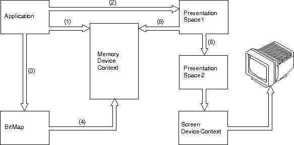

To enable an application to create a bit map:
A memory device context enables an application to treat a bit map in memory as though it were a device. For example, an application can copy color information from another bit map, or copy pels on the display, into a bit map associated with a memory device context.
To create the memory device context, call DevOpenDC with:
Note: The device device-context handle ideally should be the handle of the actual device to which you will be directing the bit map. Otherwise, it will be necessary to change ownership to the appropriate device driver before the BitBlt operation (which copies the bit map from one presentation space to one associated with a screen device context). As a consequence, the image may appear distorted.
The operating system requires this association before the application can perform many of the bit map operations. The handle of this graphics presentation space is required as input to subsequent bit-map-creation and manipulation functions.
When an application creates a bit map, the handle of the presentation space that you have associated with the memory device context causes the bit map to be created in a format that is compatible with the memory device context.
The application also passes two structures: the bit-map information header and the bit-map information table. These structures contain a great deal of information about the bit map.
To create the bit map, call GpiCreateBitmap with:
GpiCreateBitmap returns a handle to the bit map, which is used to identify the bit map.
To determine which bit-map formats are supported on a particular device, call GpiQueryDeviceBitmapFormats. This returns every format supported on a named device. The data is returned as an array of bit-map plane and bit-count pairs. The first pair of values in the array is the one most suitable for the device.
You can think of the bit map at this stage as a rectangular area of memory containing random data. You can initialize the bit map at this stage by providing GpiCreateBitmap with the address in application storage of some initialization data and by setting the CBM_INIT option. This is a useful function if, for example, your application always starts by displaying the same image.
Before selecting the bit map, you can disassociate the presentation space from the original memory device context and associate it with a different memory device context. However, the bit-map format must be convertible to a format that is supported by the new device. If you have selected one of the four standard bit-map formats, this compatibility is guaranteed and the conversion is automatic.
Note: When a presentation space is associated with a memory device context, a bit map must be selected into the device context before you can draw in the presentation space.
To select the bit map, call GpiSetBitmap with:
The following figure shows the sequence of events when you create and display a bit map.
Creating and Displaying Bit Maps
The application:
Note: If the bit map is initialized when it is created, this step does not normally exist. Alternatively, this step can be a GpiSetBitmapBits call.